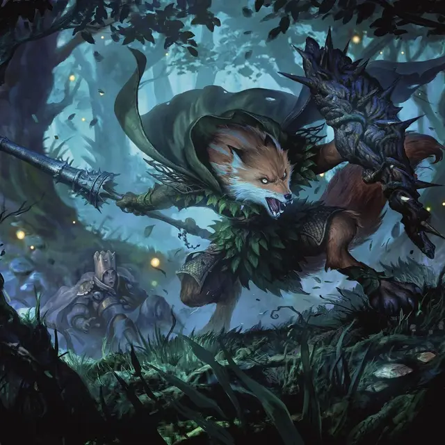

Верлис Краснозубья
Redtooth Werefox
Средний Монстр (Эльф), любое мировоззрение

Класс Доспеха 13
Хиты 60 (11к8 + 11)
Скорость 30 футов (в форме эльфа; 40 фт. в форме лисы или гибридной форме)
| мод | спас | ||
|---|---|---|---|
| СИЛ | 16 | +3 | +3 |
| ЛОВ | 17 | +3 | +3 |
| ТЕЛ | 12 | +1 | +1 |
| мод | спас | ||
|---|---|---|---|
| ИНТ | 11 | +0 | +0 |
| МДР | 13 | +1 | +1 |
| ХАР | 10 | +0 | +0 |
Навыки Акробатика +5, Восприятие +5, Выживание +3
Чувства тёмное зрение 60 футов, пассивное Восприятие 15
Языки Общий, Эльфийский (не может говорить в форме лисы)
Опасность 3 (700 опыта)
Бонус мастерства +2
Действия
Мультиатака. Верлис совершает две атаки Укусом или две атаки Копьем, или одну атаку Укусом и одну атаку Копьем.
Укус (только в форме лисы или гибрида). Рукопашная атака оружием: +5 к попаданию, досягаемость 5 фт., одна цель. Попадание: 8 (1к10 + 3) колющего урона. Если верлис переместился как минимум на 20 футов прямо к цели непосредственно перед попаданием, и цель является существом Среднего размера или меньше, цель должна преуспеть в спасброске Силы Сл 13, иначе упадёт ничком
Копьё (только в форме эльфа или гибрида). Рукопашная атака оружием: +5 к попаданию, досягаемость 10 фт., одна цель. Попадание: 9 (1к12 + 3) колющего урона.
Опутывающая стрела (только в форме эльфа или гибрида). Дальнобойная атака оружием: +5 к попаданию, дистанция 150/600 фт., одна цель. Попадание: 10 (2к6 + 3) колющего урона, и цель должна преуспеть в спасброске Ловкости Сл 11, иначе будет опутанна до начала следующего хода верлиса.
Бонусные действия
Смена формы. Верлис превращается в гибрид лисы и эльфа, в лису или обратно в свою эльфийскую форму. Его игровые характеристики, за исключением скорости, одинаковы в каждой форме. Любое снаряжение, которое он носит или несет, не трансформируется. В случае смерти он возвращается в форму эльфа.
Вульпийская проворность (только в форме лисы или гибрида). Верлис совершает действие Рывок или Отход.
Описание
«Мой народ — одновременно и цветок, и шипы. Наши свирепые нравы — являются такой же частью нас, как и наши умения, наша красота и наша история».
— Йенна, регент Краснозубых
Днем эльфы Крепости Красного Зуба — ловкие и искусные следопыты, умело патрулирующие земли вокруг одной из последних эльфийских цитаделей в Элдраине. Но по ночам из залов крепости раздаются ужасающие вопли, когда её обитатели превращаются в безжалостных верлисов.
В отличие от других форм ликантропии, это проклятие оборотня не заразно и доступно только эльфам Крепости Красного Зуба. Легенды гласят, что давным-давно гарнизон крепости отказал группе путешественников, ищущих убежища. Одна из них оказалась могущественной ведьмой и перед тем как уйти она проклял эльфов, заявив, что их тела навсегда изменятся, чтобы соответствовать эгоистичной и звериной природе их сердец.